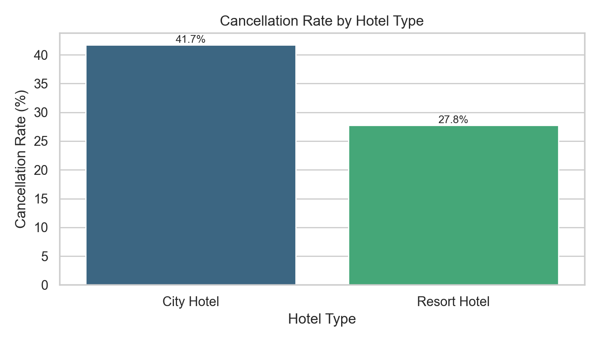
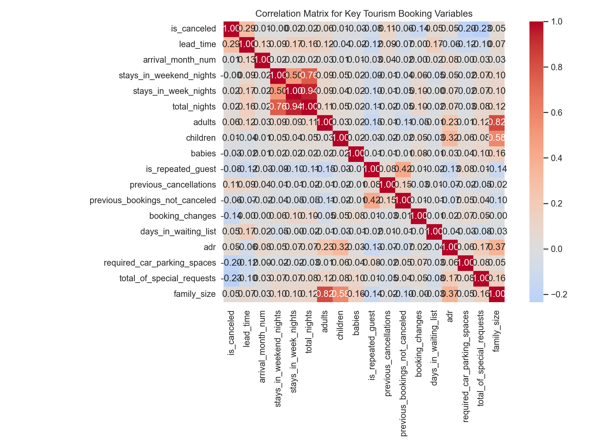
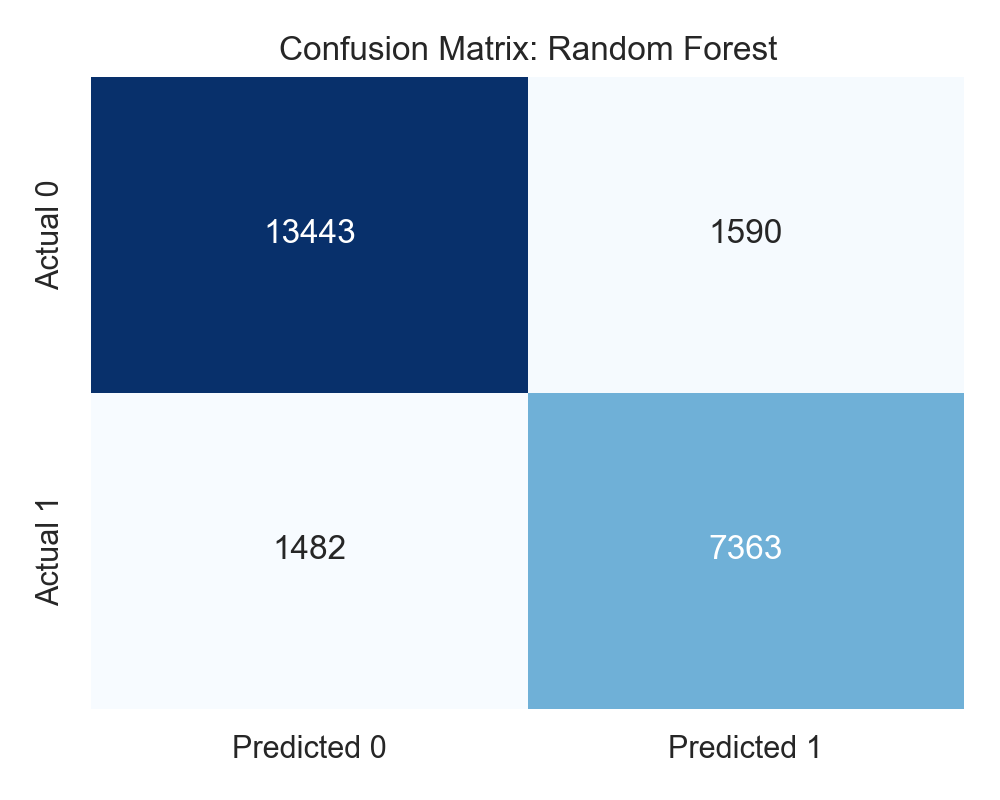
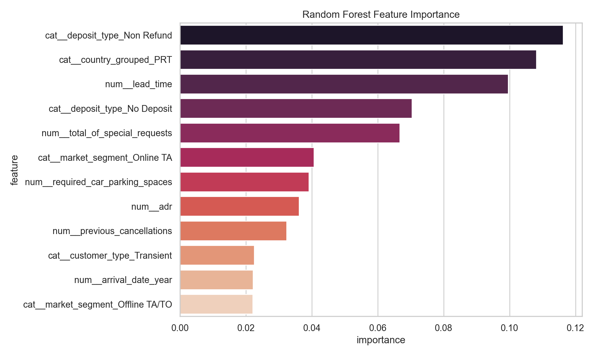

This presentation-ready view summarizes the dataset, the most useful features, and the machine learning results for a TSA Data Science project on hotel booking cancellations.
reservation_status and reservation_status_date were excluded so the model does not cheat.
| feature | correlation_with_is_canceled |
|---|---|
| is_canceled | 1.0000 |
| lead_time | 0.2931 |
| previous_cancellations | 0.1101 |
| adults | 0.0600 |
| days_in_waiting_list | 0.0542 |
| adr | 0.0476 |
| family_size | 0.0465 |
| stays_in_week_nights | 0.0248 |
| model | accuracy | precision | recall | f1 | roc_auc |
|---|---|---|---|---|---|
| Random Forest | 0.8713 | 0.8224 | 0.8324 | 0.8274 | 0.9451 |
| Decision Tree | 0.7955 | 0.6737 | 0.8686 | 0.7589 | 0.9061 |
| Logistic Regression | 0.8077 | 0.7232 | 0.7792 | 0.7501 | 0.8949 |
| Predicted 0 | Predicted 1 | |
|---|---|---|
| Actual 0 | 13443 | 1590 |
| Actual 1 | 1482 | 7363 |
| feature | importance |
|---|---|
| cat__deposit_type_Non Refund | 0.1162 |
| cat__country_grouped_PRT | 0.1081 |
| num__lead_time | 0.0996 |
| cat__deposit_type_No Deposit | 0.0704 |
| num__total_of_special_requests | 0.0667 |
| cat__market_segment_Online TA | 0.0406 |
| num__required_car_parking_spaces | 0.0391 |
| num__adr | 0.0361 |
| num__previous_cancellations | 0.0323 |
| cat__customer_type_Transient | 0.0225 |




lead_time, special_requests, and parking_spaces.